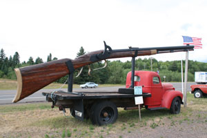

What part of our fair country takes 12 hours to drive across, wants to become the newest state in the Union, was the home of Hiawatha, has beautiful beaches, is billions of years old, and has natives who carry guns bigger than their trucks? Give up? I'll give you one more hint, it often gets more than 26 FEET of snow! No, it's not Alaska, it's the un-famous Upper Peninsula or U.P. of Michigan, home of the wacky Yoopers.
The term "Yoopers" is derived from U.P.-ers, and started as a derogatory word used by the 9,000,000 people of lower Michigan for the 300,000 strange, snow-covered creatures of the frozen U.P., a huge area comprising a third of the land mass of the state, surrounded by Lakes Huron, Michigan and Superior. The Yoopers, who noticed that the southerners lived below the Mackinac Bridge, the only connection between the U.P. and the southern part of the state, decided to call the southerners "the trolls." But of course they meant this in a respectful, caring way. They were so caring that for many years the U.P. tried to secede from the rest of Michigan, and become the 51st state.
I discovered the U.P. when I was driving across country from west to east one summer, and decided to visit friends in Marquette and Sault St. Marie, the two largest towns in the U.P. Both have less than 20,000 people. Entering from Wisconsin to the west, I looked at the map, noticed that the peninsula was about 300 miles across, and figured I could drive that in 5 hours. It took 12. The U.P. has no four lane roads, only two lane ones, and most of those are one lane all summer. This is because the winters are so bad and long that the roads get destroyed, and it takes all summer to fix them. So construction crews occupy one lane, and the traffic waits in long lines until a flagman waves them past. But the U.P. is worth driving through, since the three huge lakes, the 300 waterfalls, and the beautiful forests make the area a travelers' delight.
The most famous person to come out of the U.P. was the semi-fictional Hiawatha, popularized by poet Henry Wadsworth Longfellow. Hiawatha was a great chief who lived in about the 1500s, and helped unite the five Indian Nations of the Seneca, Cayuga, Onondaga and Mohawk into a peaceful confederation. Little is known for certain of his actual life, and several other states including New York claim him. But there is a Hiawatha National Forest in the U.P., with over 100 miles of shoreline and beautiful sandy beaches.
The would-be state is one of the oldest places on Earth. Rocks just north of Marquette have been dated at over two billion years old-that's one of the oldest surfaces left on the face of the planet. These rocks are all that remain of once-mighty mountains taller than the Rockies. These ancient geological formations contributed mightily to the region's income. Amazingly, copper and iron mining in the U.P. yielded more wealth than the California Gold Rush, although most of the mines have now closed.

Big Ernie at Yooperland
Travel Tales
Da Yoopers, eh? You Betcha!
by
Llewellyn Toulmin
|
Despite the antiquity of their land, Yoopers don't take themselves too seriously. The main welcome station into the region is called Da Yoopers Tourist Trap, and sells all kinds of cheesy knickknacks, joke books, and trinkets. A sign outside says "Welcome to Yooperland: Relax, enjoy, and spend all your cash, but please don't move up here." Inside, the gift shop has what is probably the only gift shop section in the country entirely devoted to items about - wait for it - flatulence! Cushions, towels, t-shirts, alarm buttons, machines reproducing the sound, and of course bumper stickers tell the story of one of the U.P.'s major products.
The attached Yooper Museum features the world's largest working chainsaw, named "Big Gus," 23 feet long and powered by a V-8 engine. But the biggest attraction of all is "Big Ernie,"" the world's largest working black powder rifle. Over 25 feet long, this gun is bigger than the large truck it rides on. It once fired a rock wrapped in duct tape over 2.5 miles into a corn field, and the shock wave blew out windows in nearby farm houses.
Typical Yooper jokes, usually told by Yoopers themselves, feature Ole and Sven, two rather dim-witted U.P.-ers of Finnish extraction with thick accents, who always say "eh?" and "You betcha!" A classic Yooper joke goes like this: "Northern Michigan's worst air disaster occurred today, when a Cessna 152, a small two-seater, crashed into a church cemetery in Baraga, U.P. Ole and Sven, working as a search and rescue team, have recovered 826 bodies so far, and expect the number to climb as digging continues into the night."
* * *
Lew Toulmin has visited 49 of the 50 states, plus the U.P., and lives in Silver Spring. Yoopers gift items can be obtained from the web store at www.dayoopers.com.
#end#
Close this window
|